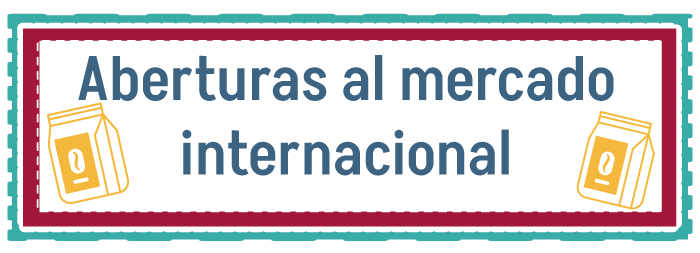
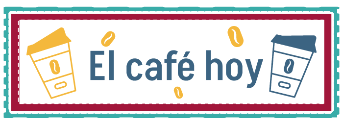

Distribución de tierras cafetaleras en El Salvador.


Zonas agrícolas de cultivo intensivo.
Comprenden los territorios de: Ahuachapán, Sonsonate (Río Grande-Banderas), Zacatecoluca (La Libertad-San Marcos), Usulután (San Marcos Lempa-Usulután), Golfo de Fonseca, Santa Ana – Ahuachapán, Zapotitán, San Salvador, San Vicente, San Miguel, Alto Lempa, Metapán y Pequeños Valles.
Estas zonas son aquellas en donde se puede desarrollar una agricultura intensiva basada en cultivos de ciclo corto, y que con la posible dotación de riego y aplicación de la tecnología moderna puede aumentar sustancialmente la producción agrícola del país.
Zonas de cultivo permanente.
Por otro lado, Santa Ana, San Salvador, San Miguel y San Francisco Gotera; pertenecen a las, las cuales tradicionalmente han sido usadas para el cultivo de café con diferentes grados de rendimiento. De acuerdo con el agrupamiento de las áreas de producción. La zona de Santa Ana tiene una extensión total en la que predominan áreas con alto rendimiento, superior a la de San Salvador, y esta es mayor en relación con San Miguel y San Francisco Gotera.
Cerca del 68% del territorio dedicado a la producción de café está sembrado con cafetos de la variedad Bourbon, el 29% con Pacas y el 3% restante con variedades como el Pacamara, el Caturra, Catuai, Catistic y el Pacamara, un híbrido obtenido en El Salvador resultado del cruce de la variedad Pacas y Maragogipe Rojo.